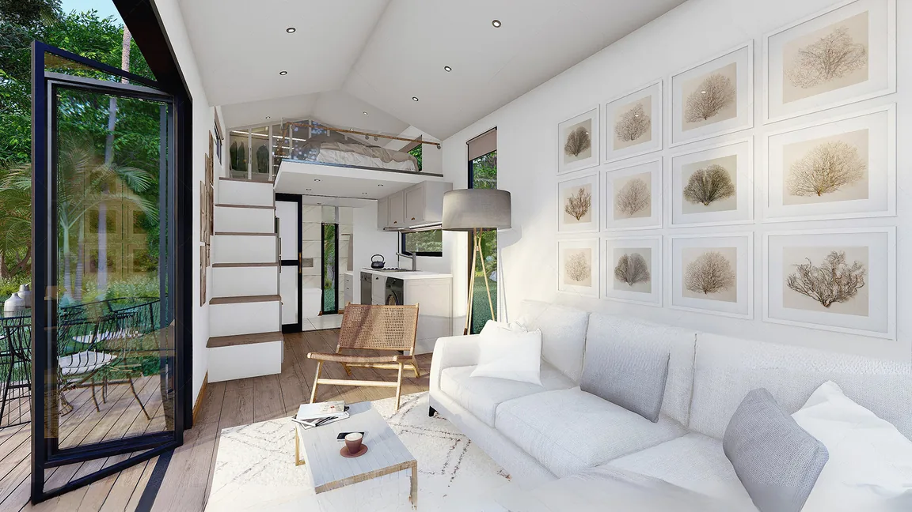
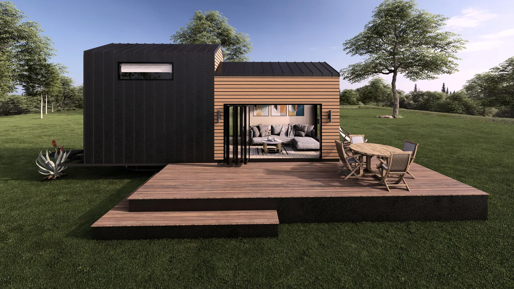

Tiny House in Eystrup kaufen
Premium Tiny Houses direkt vom Hersteller: intelligent geplant, für vier Jahreszeiten konfigurierbar und je Projekt nach Eystrup lieferbar.
MODUNERA produziert acht Tiny-House-Modelle nach eigener Spezifikation und plant Lieferungen nach Eystrup sowie in ganz Niedersachsen. Für ein belastbares Angebot werden Nutzung, Modell, Ausstattung, Grundstückszufahrt und lokale Anforderungen gemeinsam geprüft.
Warum ein MODUNERA Tiny House für Eystrup?
Zwischen Nordseeküste, Heide, Weserbergland und Harz reichen die Anforderungen von Wind- und Feuchteschutz bis zu wintertauglicher Haustechnik und touristischer Nutzung.
Mehr Nutzwert pro Quadratmeter
Lofts, Einbaumöbel, klare Laufwege und große Sichtachsen machen kompakte Fläche spürbar großzügiger.
Direkt ab Werk
Eigene Spezifikation reduziert unnötige Zwischenstufen und schafft klare Ansprechpartner für Modell, Ausstattung und Qualitätskontrolle.
Vier Jahreszeiten planbar
Dämmung, Fenster, Lüftung sowie Heiz- und Kühlsystem werden auf Nutzung und Standortprofil abgestimmt.
Weniger Betriebsfläche
Eine kleinere, gut geplante Hülle kann Material-, Reinigungs- und Energieaufwand gegenüber deutlich größeren Wohnflächen reduzieren.

Standortgerechter Komfort statt Standardpaket.
Wechselhafte Witterung, Regenperioden und moderate Winter machen Feuchteschutz, Lüftung und eine flexibel regelbare Heizung zu zentralen Planungsthemen.
- regensichere Fassaden- und Fensteranschlüsse
- kontrolliertes Lüftungs- und Feuchtekonzept
- effiziente Heizung für Übergangszeiten
- wartungsfreundliche Außenmaterialien
Die Angaben sind eine geografisch abgeleitete Orientierung. Statik, Energie, Genehmigung und Aufstellung müssen für das konkrete Grundstück fachlich geprüft werden.
MD 3: Privatsphäre, Homeoffice und flexible Nutzung
Für viele Projekte rund um Eystrup ist MD 3 ein guter Ausgangspunkt. Die endgültige Modellwahl erfolgt nach Personenanzahl, gewünschter Privatsphäre, Nutzung und Transportbedingungen.

MD 3 individuell konfigurieren
Privatsphäre, Homeoffice und flexible Nutzung. Farben, Fassaden, Küche, Bad, Möbel, Heiztechnik und Energieoptionen können für Ihr Projekt angepasst werden.
Modell ansehen →Nutzungsideen für Eystrup
Ein Tiny House kann Zuhause, Ferienobjekt, Arbeitsraum oder Teil eines Betreiberprojekts sein. Wirtschaftlichkeit und Komfort hängen von einer klaren Zieldefinition ab.
Grundriss, Technik und Ausstattung werden auf dieses Nutzungsszenario abgestimmt.
Grundriss, Technik und Ausstattung werden auf dieses Nutzungsszenario abgestimmt.
Grundriss, Technik und Ausstattung werden auf dieses Nutzungsszenario abgestimmt.
Grundriss, Technik und Ausstattung werden auf dieses Nutzungsszenario abgestimmt.

MODUNERA Produktionsbasis
- tragende Stahlkonstruktion und Stahlfahrgestell
- Thermowood-, Verbund- und projektabhängige Metallfassaden
- wärmeisolierte PVC-Elemente und modellbezogen ausgelegtes Thermopane
- flammhemmende Kabelkanäle und halogenfreie Installation für 230 V / 50 Hz
- Klimaanlagen-Infrastruktur und konfigurierbare Heizlösungen
- lackierte Küchenschränke und massive Paneel-Arbeitsflächen
Kompakter leben, gezielter investieren.
Nachhaltigkeit entsteht nicht durch ein Etikett, sondern durch passende Größe, langlebige Konstruktion, effizienten Betrieb und bewusste Materialwahl.
Kleinere beheizte und zu reinigende Flächen können laufenden Aufwand reduzieren.
Heizung, Kühlung, Solar und Speicher werden nach realem Nutzungsprofil dimensioniert.
Wartbare Fassaden, robuste Stahlstruktur und dokumentierte Details unterstützen den Werterhalt.
Ein durchdachter Grundriss kann Wohnen, Arbeiten, Gäste und Vermietung kombinieren.
Von Eystrup zur fertigen Konfiguration.
Ein sauberer Prozess reduziert Nachträge, Transportprobleme und Fehlentscheidungen.
Anforderungen
Nutzung, Personen, Budget, Grundstück und gewünschter Termin.
Konfiguration
Modell, Grundriss, Fassade, Innenausbau und technische Pakete.
Standortprüfung
Zufahrt, Entladung, Untergrund, Anschlüsse und lokale Freigaben.
Produktion & Lieferung
Qualitätskontrolle, Dokumentation und abgestimmter Transport nach Eystrup.
FAQ: Tiny House in Eystrup
Klare Antworten für die erste Projektphase. Verbindliche Aussagen entstehen nach Standort- und Vertragsprüfung.
Der Preis hängt von Modell, Länge, Innenausbau, Heiz- und Kühlsystem, Energiepaket, Transport sowie den örtlichen Anschlussarbeiten in Eystrup ab. Der Konfigurator liefert eine erste unverbindliche Indikation; ein verbindliches Angebot folgt nach technischer Prüfung.
Eine Lieferung nach Eystrup wird für jedes Projekt geprüft. Entscheidend sind Abmessungen, Gewicht, Route, Zufahrt, Rangierfläche und Entladepunkt. Die finale Transportplanung erfolgt nach Standortfreigabe.
Mobilität oder Räder bedeuten nicht automatisch Genehmigungsfreiheit. Nutzung, Aufstellungsdauer, Grundstück und lokale Planungsvorgaben müssen mit der zuständigen Gemeinde oder Bauaufsicht für Eystrup geklärt werden.
Die MODUNERA-Modelle können für eine ganzjährige Nutzung konfiguriert werden. Dämmung, Fenster, Wärmebrücken, Lüftung und Heizleistung müssen jedoch auf das konkrete Klima und Grundstück in Eystrup abgestimmt werden.
Für Paare und Panoramaorientierung eignet sich häufig MD 1; Familien profitieren von MD 2 mit zwei Lofts; MD 3 und MD 4 bieten zusätzliche Raumtrennung; MD 6 setzt einen starken Chalet-Akzent. Die endgültige Auswahl richtet sich nach Personenanzahl, Nutzung und Standort.
Ja. Fassade, Innenraum, Küche, Bad, Möbel, Heiz- und Kühlsystem, Solartechnik sowie weitere Optionen können innerhalb der technischen und gewichtsspezifischen Grenzen für jedes Projekt konfiguriert werden.
Weitere Tiny-House-Standorte
Entdecken Sie regionale Informationsseiten und vergleichen Sie standortbezogene Planungsprofile.
* Luftlinienentfernung zur Produktionsregion Kartepe/Türkei, auf 50 km gerundet. Keine Routen-, Lieferzeit- oder Kostenangabe.